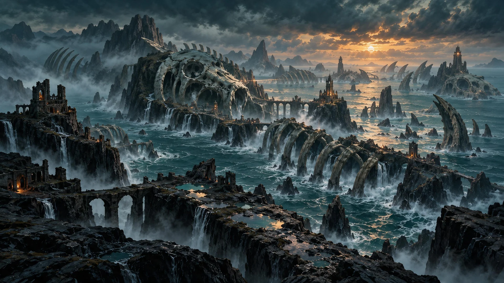
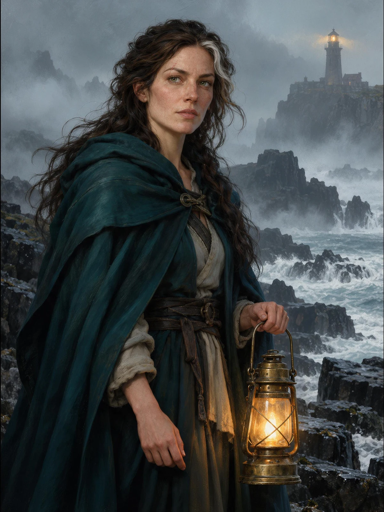
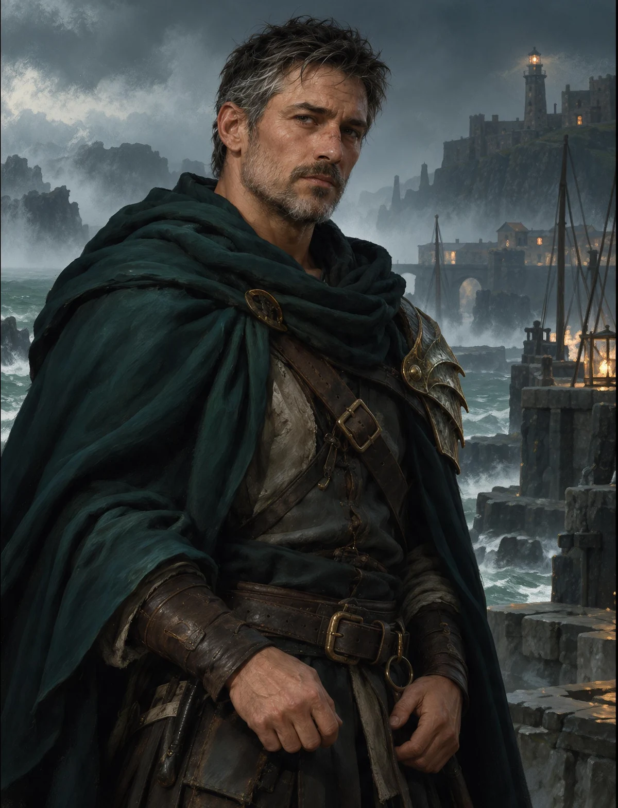
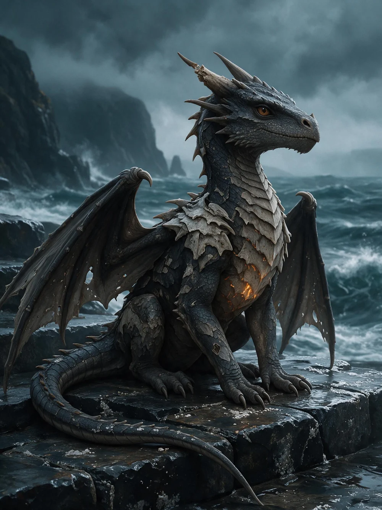

Смотрительница
Она знает, как пережить шторм. Как сохранить огонь. Как не задавать вопросов, на которые никто не ответит. Но не знает, что делать с существом, которое доверилось ей первым.

Дарья Тишина · Морская готика
Море вернуло того, кого не должно быть. Теперь ей придётся решить, стоит ли гасить свет.

Боги умерли. Их кости стали островами.
Но море ещё не закончило свою историю
Семь лет смотрительница зажигала огонь и соблюдала запрет: не спускаться к воде после полуночи. Пока море не вернуло отцовский фонарь. А следом — маленького дракона, которого она нашла на затопленных ступенях.
За ним приходит охотник. Он знает, чем закончилась последняя встреча людей и драконов. Но даже он не может объяснить, почему огонь в груди существа горит так же, как свет маяка.

Одна дала обещание.
Другой пришёл его нарушить
Она знает, как пережить шторм. Как сохранить огонь. Как не задавать вопросов, на которые никто не ответит. Но не знает, что делать с существом, которое доверилось ей первым.

Для него дракон — незаконченная история. Он возвращается на острова, чтобы поставить точку. И встречает человека, который впервые заставляет его усомниться в том, что он помнит.

Он ещё помещается на ступени. Прячет крылья от ветра и смотрит на протянутую ладонь. В нём нет величия древних богов — только осторожное дыхание и слабое тепло под светлыми пластинами.
Но с его появлением вода останавливается. А огонь в башне начинает гореть иначе.
Выберите место — и узнайте,
что скрывается за туманом
Архипелаг, выросший на останках мёртвых богов. Здесь скалы сохраняют форму рёбер, а дороги обрываются там, где начинается прилив. Между островами ещё стоят мосты — и ещё помнят обещания.
Глава первая · Начало истории
В ту ночь море вернуло ей фонарь.
Тот самый, который отец унёс с собой семь лет назад. Латунь потемнела, стекло заросло солью, но на дужке всё ещё виднелись две зарубки.
Смотрительница провела по ним большим пальцем и впервые за много лет забыла проверить огонь наверху.
Тёмная морская сказка о доверии, памяти и выборе, который нельзя сделать за другого.
Концепт книжного запуска. Покупка и предзаказ демонстрируют разные сценарии; оплата и сбор заявок не ведутся.
Посмотрите краткое описание книги и авторскую концепцию. Для обсуждения издания, интервью или совместного проекта напишите команде WOLFART.
Поможем его показать: от обложки и иллюстраций до текстов и лендинга. Соберём историю, визуальный образ и путь читателя в один проект.